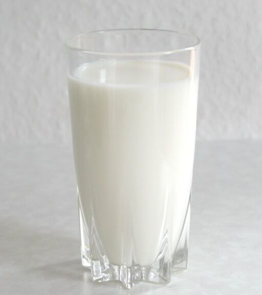

Symbols of Wisconsin
Wisconsin is proud of its many symbols! Here are a few. Hover your mouse over the picture to get more information

Symbols not pictured:
- State Dairy Product: Cheese
- State Flower: Wood Violet
- State Mineral: Galena
- State Wildlife Animal: White-tail Deer
- State Pastry: Kringle
- State Song: On Wisconsin
- State Dance: Polka
- State Fossil: Trilobite
- State Insect: Honey Bee
- State Symbol of Peace: Mourning Dove
- State Rock: Red Granite
- State Grain: Corn
Thanks for learning about the great state of Wisconsin! Click the button to return home
Home